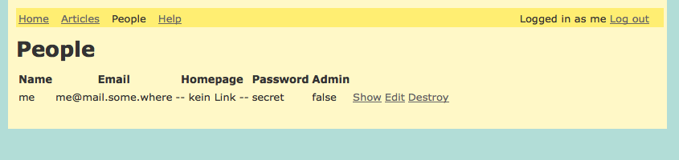
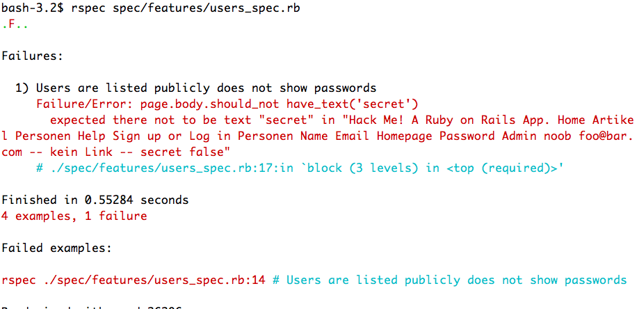

1 Example App
This guide comes with an example app, you can find the source on github: rails-example-security. This app is full of security holes. While reading this guide you should work on the app and fix those holes one by one.
2 Don't display confidential data
Rails offers a lot of security features. But all those clever features cannot save you from yourself. In the example app all the passwords are displayed on "/users". No framework can prevent that!

Let's use this as an example of how to fix a security problem
once you've found it: First we write a test for the problem: rails g integration_test users
require 'test_helper'
class UsersTest < ActionDispatch::IntegrationTest
fixtures :users
test 'users are listed publicly' do
get '/users'
assert_response :success
assert_select 'td', users(:one).email
end
test 'users passwords are not shown publicly' do
get '/users'
assert_response :success
assert_select 'td', { text: users(:one).password, count: 0 }, 'no table cell contains a password'
end
end
When we run this test it fails, because right now passwords are displayed:

Now we change the view to not display the passwords any more. We can run the test to make sure we succeeded.
3 See Also
- Rails Guide: Security
- Tool: loofah
- Tool: brakeman